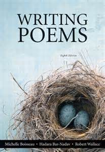
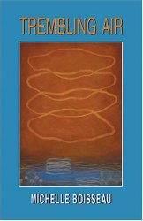
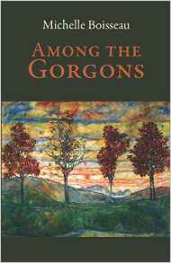

Michelle Boisseau won the Tampa Review Prize in 2015, and her fifth book of poems, Among the Gorgons, was published by University of Tampa Press in April 2016. One of the poems from this book (“Ugglig”) was chosen by Edward Hirsch for Best American Poetry 2016. Her A Sunday in God-Years (U. of Arkansas P. 2009) in part examines her paternal ancestors’ slave-holding past in Virginia. Trembling Air (U. of Arkansas P. 2003) was a PEN USA finalist. She also published Understory (Northeastern U. P. 1996), which was selected by Molly Peacock as the winner of the Morse Prize, and No Private Life (Vanderbilt U.P. 1990). New poems have appeared in Poetry, Gettysburg Review, Yale Review, Hudson Review, Shenandoah, Cincinnati Review, Missouri Review, Southwest Review, Prairie Schooner, Miramar, New Ohio Review, and others. Five of the poems from Among the Gorgons appeared on Poetry Daily. She was educated at Ohio University (BA, 1977 summa cum laude; MA, 1980) and the University of Houston (PhD 1985).
Twice Boisseau has been awarded a National Endowment for the Arts Fellowship for poetry. Her university textbook, Writing Poems (Longman), initiated by the late Robert Wallace, is now in its 8th edition with Boisseau’s colleague Hadara Bar-Nadav. She is Professor of English in the MFA program at the University of Missouri-Kansas City, Senior Editor of BkMk Press, and Contributing Editor of New Letters. She lives in Kansas City with her fellow Royals fan, her husband Tom Stroik, an internationally renowned linguist who writes on poetics, syntax, and the evolution of human language. Their grown children are Katie Stroik and Anna Boisseau.
Philip Belcher: One of your many strengths, apparent in every volume from No Private Life to Among the Gorgons, is vivid, memorable imagery. In “In the Mazy Gardens of the Ruined Hotel” from No Private Life, you describe “flattened grass . . . rising up blade by blade / like the hair on a cold arm catching the sun.” In the same volume, in “Meanwhile the Elephants,” you describe members of an orchestra who seem to be “trying / to understand a beast together . . . .” You compare the orchestra to blind individuals discovering that in front of them is an elephant and wonder, if they had to kill it to discover what it was, whether they would, when they lifted the heart,
. . . understand that this chambered
and valved instrument irrigated the dead land
piled at their knees? And the little guy who gets lost
in the cavity and wanders like a wise fetus,
does he know more, or less, than the others?
*
This is wonderful. I want to know what you think makes a memorable image?
Michelle Boisseau: The image has to work on the living, breathing body, the more ways the better. It’s useful to remember how Dickinson said she knew when something was poetry when she felt physically as if the top of her head were taken off. Now there’s a tactile image. Our culture emphasizes the visual so much that we often forget that an image can strike any of the senses—and often more than one at a time. And “all senses,” as “Cave of Hands” [in Among the Gorgons] puts it, “come down to touch.” The winter afternoons that Dickinson gives us and their certain slant of light oppress “like the Heft of Cathedral Tunes.” Note the press in “oppress,” the tactile that the verb carries as it tangles sight, touch and sound synthetically.
Striking images give us body knowledge, knowledge not just in our minds but what we feel in the finite body which responds to the rain and sun, the kiss and the rumble. Imagery I think is best when it makes us feel our creatureliness. The body reminds us we’re not immortal even while the mind dreams and dreams that we are. In a world where the Internet is always on and we can endlessly stream stuff into our phones, that tingling scariness that a good poem gives us ignites our sense of human frailty and ultimately what matters.
PB: I found “Likeness,” from Understory, to be incredibly moving. In that poem, you write: “What’s the use of metaphor if it can’t make loss / fathomable, and the loss of loss: / a fathom is the measure of the arms / outstretched.” Here, of course, you’re using figurative language to talk about figurative language. But could you talk about the role of metaphor in your work? Do you find it sufficient for bridging the gap between information and understanding?
MB: Is anything sufficient? Finding what will suffice—as Stevens says—that’s why we write, to bridge the gaps, to understand, to open up what seems closed on us. When I’m trying to understand what the poem might be trying to show me or when I’m trying to work my way toward a discovery by writing the poem (or what I hope will be a poem), I feel my way in—through the “meaning” of the words (and the metaphors buried in their etymologies) but also by how the words sound. I often tell my students to think about the sound they feel the line needs, go after the sound, instead of trying to paraphrase some idea they have or event they’ve experienced. Sometimes the only way to peel things back is to create a feeling through a metaphor and to find the metaphor by going after the sound: the rhyme of Dickinson’s winter afternoons and cathedral tunes.
“Likeness” is a poem about my daughter coming into language and so becoming a human. When kids are learning language around the time they’re two or three years old, they go through a stage called over-generalization (it’s handy to be married to a linguist as I am) where they might call any four-legged creature a doggy, or any round disk a moon. They discover likeness, and in a sense toddlers go through the same process our very ancient ancestors went through when they began to create human language. And that’s how we create and adapt new words all the time—like the buttons on a cell phone when we’re just touching a flat screen.
PB: In her introduction to your 1996 Morse Poetry Prize-winning Understory, Molly Peacock wrote that “[p]ersonal poets often long to extend private life into the world at large, and few are able to.” Why do you think that’s the case?
MB: I’m not sure I can say. For me, the personal and the universal are inextricable, and the poem is a way of trying to realize how my singular experience is tied to everyone else’s. George Eliot says this so well. I used this statement from her novel Felix Holt, the Radical for the epigraph of my first book, No Private Life:
but there is no private life which has not been determined by a wider public life, from the time when the primeval milkmaid had to wander with the wanderings of her clan, because the cow she milked was one of a herd which has made the pastures bare.
I’m something of a history geek, and what I read often percolates into what I write. Hugh Thomas’s The Slave Trade was one of the things that spurred me to research my own family’s history of slave-holding. One of the many details Thomas writes about is how in the Middle Ages, along with the highly prized black slaves, came gold: a lot of the gold in medieval art—the haloes around saints heads you see in Fra Angelico, for instance—originated around the Niger River and was brought across the Sahara by Arab traders, and then sold along the Mediterranean coast, although the painters had no idea about the source of their gold. I was wondering about how or if beauty withstands the taints of its origins.
As I was reading The Slave Trade, I found a copy of the book shelved in my local library next to books about NAFTA and international commerce. I took it to the circulation desk and got into a tussle with the librarian, telling her the book was miscataloged. She said that was how the system labeled it, and, yep, there it was on the copyright page. It shocked me. And then I was repulsed by my own naiveté: it was called slave trade for a reason. It was a business.
I was working on the long series that became “A Reckoning” at about the same time that the genetic testing was done on the Hemingses, the African-American Jefferson descendants, and about then also came the revelations about Strom Thurmond’s mixed race daughter. It boggles the mind that people could sell their own children. I mean, Sally Hemings was the half-sister of Jefferson’s wife. You balk trying to put your mind around it.
PB: In an interview about A Sunday in God-Years, you wondered how a middle-aged white woman writes about slavery. Would you say something about writing about race and whether you’re concerned about cultural appropriation? Are there topics that are off-limits to poets thought of as privileged?
 MB: I don’t know if there are topics that are off-limits—I hope we can believe in a free and sympathetic imagination. But I do think there may be strategies or attitudes that seem wrong-headed. For the first few years as I was working on this slave material, I developed it into a long poem that dealt with sugar plantations, Crusaders, Romanesque mosaics, quotes from Aristotle, confectionary, genetics, gold mines, Medici gardens, and on and on. It included the runaway slave notice written by my great-great grandfather which later became part of “A Reckoning.” I showed the poem to several poet friends (white folks) who found it moving and important. I showed it to Al Young. He pointed at the runaway slave notice and said, “Start over here.” I pulled what I was working on apart; most of it was composted. I used parts of it in “Trembling Air,” particularly in the poem “Haloes Stippled with Crosses, Roses, Stars, and Spears.” I decided that I had to rethink it all in a new book, and that eventually became A Sunday in God-Years.
MB: I don’t know if there are topics that are off-limits—I hope we can believe in a free and sympathetic imagination. But I do think there may be strategies or attitudes that seem wrong-headed. For the first few years as I was working on this slave material, I developed it into a long poem that dealt with sugar plantations, Crusaders, Romanesque mosaics, quotes from Aristotle, confectionary, genetics, gold mines, Medici gardens, and on and on. It included the runaway slave notice written by my great-great grandfather which later became part of “A Reckoning.” I showed the poem to several poet friends (white folks) who found it moving and important. I showed it to Al Young. He pointed at the runaway slave notice and said, “Start over here.” I pulled what I was working on apart; most of it was composted. I used parts of it in “Trembling Air,” particularly in the poem “Haloes Stippled with Crosses, Roses, Stars, and Spears.” I decided that I had to rethink it all in a new book, and that eventually became A Sunday in God-Years.
What Al helped me see was that I was writing outside the pain, detached, superior in my ironic knowledge. It was exposition, with gimmickry. Slavery was my subject, and I was its monarch. I went back, did more research, in archives and on the ground, walking around where I thought my ancestors’ farms were, but mainly I just tried to let it sink in what it meant—that my Boisseau grandfather’s family for generations controlled the lives of generations—and how I couldn’t know in the end what it “meant”: the poem could only try to express how the struggle to understand made me feel. The “Apologies” section of “A Reckoning” attempts to register the vast entanglement of feelings and responsibilities:
And me, grandchild who makes herself the hero
since she’s the teller of the tale. I writhe
and what of it? How can I begin to recount
the sins, a million ships on every ocean?
I was extremely concerned about cultural appropriation. Venturing into this material often made me hyper wary: discomfited, anxious, disgusted.
PB: Have you noticed a tendency among contemporary poets to conceive of poetry volumes as “projects” rather than as collections of individual poems? Did you approach A Sunday in God Years that way?
MB: I think I thought of it as a “project” at first, and that was one of my troubles. I was projecting my will onto the terrain rather than organically teasing it apart, opening and reflecting on what I was discovering, what I was trying to grapple with. A problem with conceiving of a book of poems as a project is that the process of writing it can be just a matter of filling in, touching the bases, coming to conclusions. That can make for a cohesive book, but one with few poems that soar beyond the prescription. Or that astonish us.
PB: You have included many persona poems in your books. In the third section of Trembling Air alone, poems are written in the voices, among others, of dust, the month of January, a hammer, the sun, the moon, a thorn, despair, a potato, talk radio, a dog, and lace. Why are you so attracted to the persona poem?
MB: In those poems in Trembling Air I wanted to write in voices without cultural baggage. So Thorn can articulate how some people get a thrill out of inflicting pain, as certain politicians can justify torture unapologetically. Sun is the kind of person who has it made—he’s the center of it all—but still whines that he deserves better. Whereas Moon boasts how flashy she can be with the little she’s got. Radio is the deaf loud mouth spuming nonsense over the airwaves. In God-Years I felt I had to give Gibson, the runaway slave, a voice, but I also didn’t feel I had the right to speak for him. So he remonstrates me for puppeting him. In Gorgons there’s a poem in the voice of the ocean, which is a kind of a Gorgon: an immense unknowable power. I felt I needed the bigger voice to balance out the smaller personal ones.
PB: You also have a strong affinity for ekphrastic poems, particularly poems sparked by baroque paintings. You call attention to this explicitly in “Gallery Slave” in Among the Gorgons. Would you talk about how visual art affects your poems?
MB: “Gallery Slave” gave me a chance to use paintings as a way to speak about grief and its aftermath from an angle other than my own six walls. I spend a lot of time with paintings—in museums, with images of them in books and online. For me a poem tries to work on us the way a painting does. We don’t look at as much as into a painting. And that’s my aim, to create a poem not as something linear but as something that pulls us inside, that we keep coming back to, keep finding what it has to reveal to us.
PB: Your most recent volume, Among the Gorgons, deals directly and extensively with grief. The overarching tone, I would say, is elegiac. I see also, though, particularly in poems like “The Fury That Breaks,” “Body Wholly Body,” and “Fog Bank,” a strong and overt political concern. What is the relationship in this volume between the speaker’s deep grief over the death of family members and her indignation about matters of broader political import?
MB: Indignation, that’s a good way to put it. I suppose the political poems are in some ways related to how rage is one of the so-called stages of grief. What does Lear say? Why should a rat have life and you no breath at all?
In its earlier versions Among the Gorgons had even more political poems (like a sonnet called “Dick Cheney in the Bathtub”—a scree about his heart transplant). But I yanked many of the political poems as the tone and dimensions of the book changed and grief contended with me in new ways. The poems I took out seemed too loud, not to mention flat. Politics—it comes from the word for citizen, and I think one of the lessons deep grief can teach is that our own losses reveal to us the losses of others: nobody gets out of here alive, so let’s explore and celebrate how life connects us.
PB: Although I realize it’s dangerous, and sometimes inappropriate, to draw a line between a poem’s speaker and the poet, you have made the autobiographical connections explicit, particularly in A Sunday in God-Years and Among the Gorgons. Many of these poems address your family’s history, including painful discoveries about your ancestors’ ownership of slaves and frank discussions of the illness and death of your mother, your brothers, and your sister. Appearing periodically in several of your volumes are poems that discuss the speaker’s Catholic upbringing and eventual loss of faith. In “Monstrance,” from A Sunday in God-Years, the speaker affirms that, when she’s moved in historic churches “by what I don’t believe, / I don’t envy believers any more // than I envy beauty its ease, the ocean / its industry. The sun its long and lonely life.” Would you mind saying a bit about how you see faith, or its absence, affecting your poetry?
MB: I don’t think I lost my faith so much as I shrugged it off. And I can remember the exact moment. I was 18 years old in my dorm room and reading for class about figures in ancient Palestine who preached many of the same things Jesus did and even reportedly walked on water and were crucified, but who lacked what Jesus had: St. Paul to spread the word. I looked up from the book and began to ask myself a series of questions (I was also reading Socratic dialogues in that class), things like “Do you believe the Host turns into God during Mass?” “Do you believe that there is a divine presence watching out for you?” At the end of these questions I realized I was an atheist. It was exhilarating and startling. I felt suddenly free, no longer under surveillance.
But my 12 years of Catholic education have been enormously meaningful to me. First of all, being brought up Catholic situates you culturally—you’re educated in a timeline that runs from the ancient world to the modern. But more valuable for me were the models I received as a teenager from some fierce nuns of great intellectual vigor who pounded into us that we were the lucky ones, girls in school, getting an education, safe, free to make choices, and therefore we owed it to the rest of the world to do something beneficial with all that good luck that had been showered on us, to do something with our lives that wasn’t about being popular or making money.
I’m an atheist, and but I’m not a nihilist—I believe in many things, poetry among them. For me poetry has a sacred duty to connect things that don’t seem connected, to dig down and chart the subterranean rivers. Poetry is a way of knowing, or trying to know. The poets I’m most often drawn to—like Dickinson, Stevens, and Szymborska—use poetry to unfold experience and to follow the reverberations. “The poet comes to words,” says Stevens, “as nature comes to dry sticks.” In the work of the poem, we open the buds, we start fires. Especially inside ourselves.
PB: Shorter poems, shorter lines, and a stricter stanzaic form characterize Among the Gorgons. Please talk about why, in this book, you made these choices to address the volume’s focus on grief.
MB: I believe this has been the trajectory of my work for a while. My early work had a tendency to spool out, but for the last fifteen years or so I’ve been aiming for shorter and tighter. The poet distills—as Dickinson says—“amazing sense from ordinary meanings.” What concentration she creates in eight lines! As does Larkin.
Grief can be lugubrious. With this book I felt I needed some tightropes to help me balance and to keep me emotionally honest. The first poems I wrote for the book I started working on in 2008 (“Archipelagos of Snow” and “Weak Force”—which incidentally Rod published in Shenandoah). When this book started I was still mourning the death at age 53 of my oldest brother Pat who fell into schizophrenia when he was 20 and never really got to have a life. The last poems that went into the book came in summer 2015. The years between saw the deaths of my mother, my next oldest brother, Jon, at age 59, and then in 2014 at age 57 my sister Madeline, who was just fifteen months younger than I am.
Over this spread of years I went through some very dark nonverbal periods. I could barely put a sentence together, much less write poems. Well, I tried writing; my notebooks grew a lot of crap. Then gradually I began to find my footing, and to feel my way out of the cave. Creating formal impediments helped me to stretch past the lugubrious, to pursue the textural poles I was after: the flinty on one hand, the soft and sticky on the other: geology and biology, the mountains and the swamp.
*******************************
Philip Belcher is an Advisory and Contributing Editor for Shenandoah. A recipient of the Porter Fleming Prize in Poetry, he has published poems and critical prose widely in literary journals. He holds degrees from Furman University, Southeastern Baptist Theological Seminary, the Duke University School of Law and Converse College (MFA).